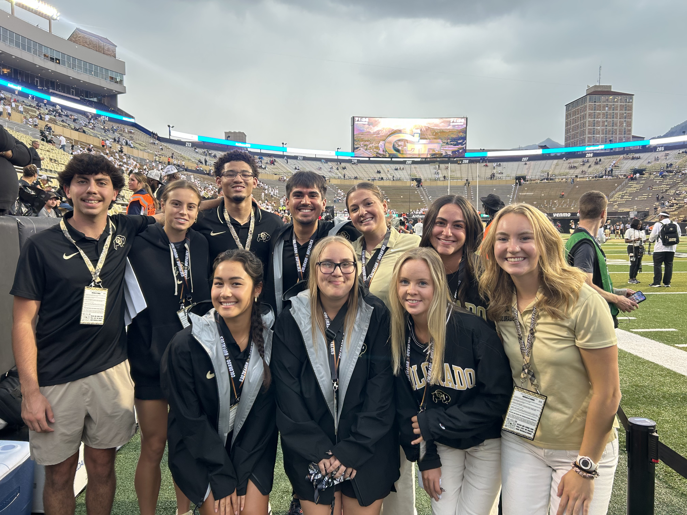

- Assisted Customer Research & Insights team in Qualtrics survey and
dashboard creation to give stakeholders insight on Customer Experience metrics
- Achieved 1st place in both the 2025 U.S Hackathon and the Global Hackathon competitions working
with a team of 5 to develop a new feature on the Cat Central app to boost new user engagement
- Utilized Excel to execute ETL workflows to clean and structure
dealer survey data and create customer experience dashboards within Qualtrics
Marketing & Fan Experience Intern - CU Athletics Department

Description
- Executed gameday operations and implementation of
in-game promotional marketing events for 6 varsity sports
- Researched university athletic program's
fan promotional activities to draw inspiration for new promotions